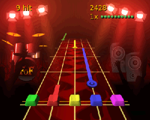
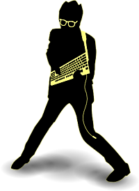

Frets on Fire
Dieser Artikel wurde für die folgenden Ubuntu-Versionen getestet:
Ubuntu 14.04 Trusty Tahr
Zum Verständnis dieses Artikels sind folgende Seiten hilfreich:
Frets on Fire  ist ein kostenloser Open-Source-Klon des bekannten Konsolen-Spiels Guitar Hero. Bei diesem geht es darum, Gitarrenstimmen aus verschiedenen Liedern nachzuspielen, indem man auf einem Gitarrencontroller die Tasten passend zu den auf dem Bildschirm dargestellten Noten drückt. Im Gegensatz zu Guitar Hero verwendet man für Frets on Fire keinen Gitarrencontroller sondern die Computertastatur, welche schräg gehalten werden muss. Alternativ lässt sich aber der Gitarrencontroller für die Playstation (als Joystick) benutzen. Neben den mitgelieferten Beispielsongs lassen sich auch weitere im Internet herunterladen. Des weiteren unterstützt das Spiel den Import der Songs von Guitar Hero DVDs. Auch lassen sich durch einen eingebauten Editor eigene Songs erstellen. Das in Python geschrieben Programm ist auch Gewinner der "Assembly Demo Party 2006".
ist ein kostenloser Open-Source-Klon des bekannten Konsolen-Spiels Guitar Hero. Bei diesem geht es darum, Gitarrenstimmen aus verschiedenen Liedern nachzuspielen, indem man auf einem Gitarrencontroller die Tasten passend zu den auf dem Bildschirm dargestellten Noten drückt. Im Gegensatz zu Guitar Hero verwendet man für Frets on Fire keinen Gitarrencontroller sondern die Computertastatur, welche schräg gehalten werden muss. Alternativ lässt sich aber der Gitarrencontroller für die Playstation (als Joystick) benutzen. Neben den mitgelieferten Beispielsongs lassen sich auch weitere im Internet herunterladen. Des weiteren unterstützt das Spiel den Import der Songs von Guitar Hero DVDs. Auch lassen sich durch einen eingebauten Editor eigene Songs erstellen. Das in Python geschrieben Programm ist auch Gewinner der "Assembly Demo Party 2006".
|  |
| FoF |
Installation¶
Paketquelle¶
Folgendes Paket muss installiert [1] werden:
fretsonfire (universe)
fretsonfire-songs-muldjord (universe, Songs)
fretsonfire-songs-sectoid (universe, Songs)
 mit apturl
mit apturl
Paketliste zum Kopieren:
sudo apt-get install fretsonfire fretsonfire-songs-muldjord fretsonfire-songs-sectoid
sudo aptitude install fretsonfire fretsonfire-songs-muldjord fretsonfire-songs-sectoid
vorkompiliertes Archiv¶
Um das Spiel direkt nach dem Herunterladen des Archivs aus diesem heraus starten zu können geht man folgendermaßen vor:
Aktuellste Version des Programms für Linux von der Projekt-Webseite
als Archiv herunterladen und entpacken [2]. Die darin liegende Datei FretsOnFire ausführbar machen [3].
Anschließend startet [4] man die Datei.
Um das Spiel in das System zu integrieren, kann man den Ordner mit Root-Rechten nach /opt verschieben und einen Menüeintrag [5] anlegen.
Deinstallation¶
Bei dieser Installation muss man nur den entpackten Ordner löschen. Ein ggf. angelegter Menüeintrag muss auch gelöscht werden. Außerdem kann man den Ordner ~/.fretsonfire mit den persönlichen Einstellungen entfernen.
Benutzung/Konfiguration¶
Nach der Installation kann man das Programm über "Spiele -> Frets on Fire" starten [4].
Hinweis:
Ändern von Einstellungen kann beim Verlassen des Programms zu einem Fehler führen. In diesem Fall lässt sich die Maus nicht mehr bewegen und das Spiel startet auch nicht neu. Um das Problem zu beseitigen, muss man den XServer neustarten, wobei natürlich auch alle geöffneten Fenster verloren gehen.

Sprache ändern¶
Zuerst sollte man die Sprache auf Deutsch ändern. Dies geschieht im Menü unter "Settings -> Game Settings -> Language", dort "German" wählen.
Auflösung einstellen¶
Anschließend sollte man die Bildschirmauflösung unter "Einstellungen -> Videoeinstellungen -> Auflösung" anpassen, da diese nicht automatisch erkannt wird. Alternativ kann man das Spiel auch mit einer kleineren Auflösung im Fenster laufen lassen, dazu muss man den "Fullscreen Modus" abschalten.
Halten der Tastatur¶
Die Tastatur sollte man am besten in der Luft wie eine Gitarre halten. Dass heißt, die linke Hand sollte auf den Tasten F1 bis F5 liegen. Mit der rechten Hand bedient man die Taste ⏎ . So kann man mit der linken Hand die Saiten auf dem Griffbrett der Gitarre drücken, während man mit der rechten Hand die ausgewählten Saiten spielt.
Songs hinzufügen¶
Um weitere Songs hinzuzufügen, die man heruntergeladen hat, kopiert man den entpackten [3] Ordner nach ~/.fretsonfire/songs bzw. in den Unterordner data/songs des entpackten Archives. Dabei ist zu beachten, dass aus rechtlichen Gründen die Audio-Datei der Songs nicht mitgeliefert wird. Man kann die Songs nur nutzen, wenn man die das Lied besitzt und als ogg-Datei mit dem Namen song.ogg in das heruntergeladene Archiv kopiert. Ggf. muss man die Audiodatei dazu umwandeln.

- Erstellt mit Inyoka
-
 2004 – 2017 ubuntuusers.de • Einige Rechte vorbehalten
2004 – 2017 ubuntuusers.de • Einige Rechte vorbehalten
Lizenz • Kontakt • Datenschutz • Impressum • Serverstatus -
Serverhousing gespendet von